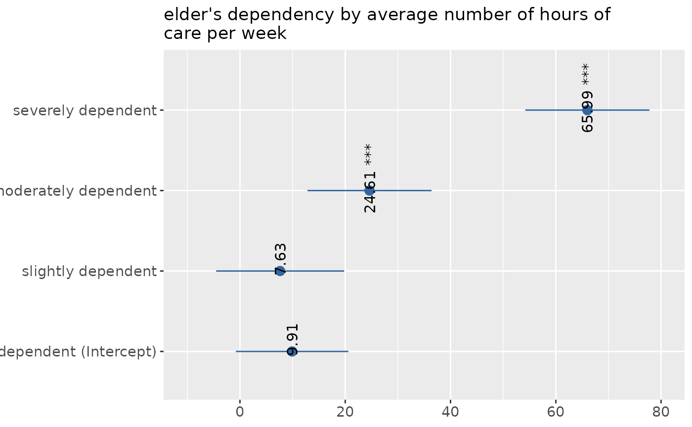

Plot One-Way-Anova table sum of squares (SS) of each factor level (group) against the dependent variable. The SS of the factor variable against the dependent variable (variance within and between groups) is printed to the model summary.
Usage
sjp.aov1(
var.dep,
var.grp,
meansums = FALSE,
title = NULL,
axis.labels = NULL,
rev.order = FALSE,
string.interc = "(Intercept)",
axis.title = "",
axis.lim = NULL,
geom.colors = c("#3366a0", "#aa3333"),
geom.size = 3,
wrap.title = 50,
wrap.labels = 25,
grid.breaks = NULL,
show.values = TRUE,
digits = 2,
y.offset = 0.15,
show.p = TRUE,
show.summary = FALSE
)Arguments
- var.dep
Dependent variable. Will be used with following formula:
aov(var.dep ~ var.grp)- var.grp
Factor with the cross-classifying variable, where
var.depis grouped into the categories represented byvar.grp.- meansums
Logical, if
TRUE, the values reported are the true group mean values. IfFALSE(default), the values are reported in the standard way, i.e. the values indicate the difference of the group mean in relation to the intercept (reference group).- title
character vector, used as plot title. Depending on plot type and function, will be set automatically. If
title = "", no title is printed. For effect-plots, may also be a character vector of length > 1, to define titles for each sub-plot or facet.- axis.labels
character vector with labels used as axis labels. Optional argument, since in most cases, axis labels are set automatically.
- rev.order
Logical, if
TRUE, order of categories (groups) is reversed.- string.interc
Character vector that indicates the reference group (intercept), that is appended to the value label of the grouping variable. Default is
"(Intercept)".- axis.title
Character vector of length one or two (depending on the plot function and type), used as title(s) for the x and y axis. If not specified, a default labelling is chosen. Note: Some plot types may not support this argument sufficiently. In such cases, use the returned ggplot-object and add axis titles manually with
labs. Useaxis.title = ""to remove axis titles.- axis.lim
Numeric vector of length 2, defining the range of the plot axis. Depending on plot type, may effect either x- or y-axis, or both. For multiple plot outputs (e.g., from
type = "eff"ortype = "slope"inplot_model),axis.limmay also be a list of vectors of length 2, defining axis limits for each plot (only if non-faceted).- geom.colors
user defined color for geoms. See 'Details' in
plot_grpfrq.- geom.size
size resp. width of the geoms (bar width, line thickness or point size, depending on plot type and function). Note that bar and bin widths mostly need smaller values than dot sizes.
- wrap.title
numeric, determines how many chars of the plot title are displayed in one line and when a line break is inserted.
- wrap.labels
numeric, determines how many chars of the value, variable or axis labels are displayed in one line and when a line break is inserted.
- grid.breaks
numeric; sets the distance between breaks for the axis, i.e. at every
grid.breaks'th position a major grid is being printed.- show.values
Logical, whether values should be plotted or not.
- digits
Numeric, amount of digits after decimal point when rounding estimates or values.
- y.offset
numeric, offset for text labels when their alignment is adjusted to the top/bottom of the geom (see
hjustandvjust).- show.p
Logical, adds significance levels to values, or value and variable labels.
- show.summary
logical, if
TRUE(default), a summary with chi-squared statistics (seechisq.test), Cramer's V or Phi-value etc. is shown. If a cell contains expected values lower than five (or lower than 10 if df is 1), the Fisher's exact test (seefisher.test) is computed instead of chi-squared test. If the table's matrix is larger than 2x2, Fisher's exact test with Monte Carlo simulation is computed.
Examples
data(efc)
# note: "var.grp" does not need to be a factor.
# coercion to factor is done by the function
sjp.aov1(efc$c12hour, efc$e42dep)
#> Warning: Continuous limits supplied to discrete scale.
#> ℹ Did you mean `limits = factor(...)` or `scale_*_continuous()`?
